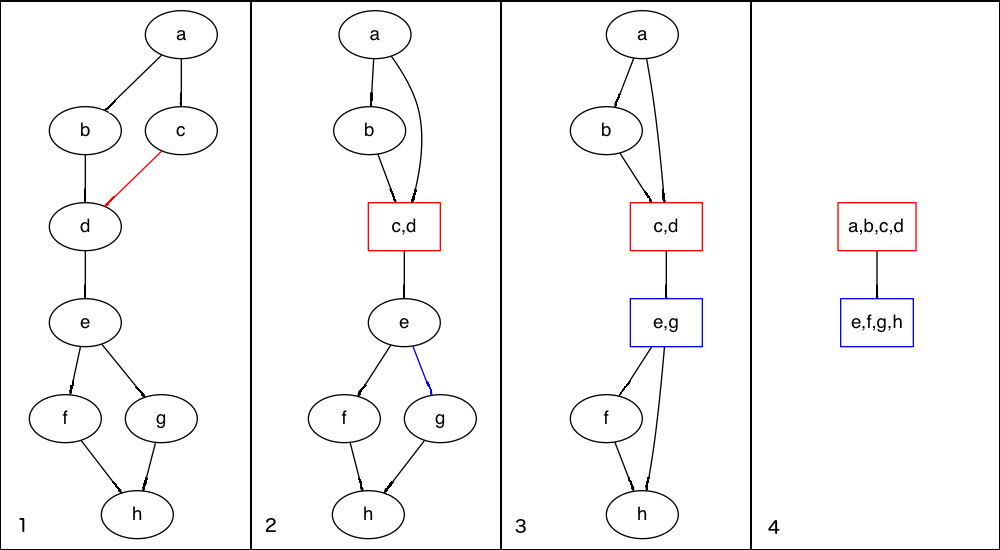

Coconut: A Rapid Prototyping Environment for Compiler Optimization
Curtis D'Alves
2022-08-24
Background
Who Am I?
- Ph.D Candidate McMaster University
- Did my Master's in Continuous Optimization Algorithms
- Working on CAS Project 1006
- Functional Programming / NixOS / Emacs enthusiast
CAS Project 1006
Stochastic Algorithms for Instructions Scheduling Emphasis on:
- finding near-optimal schedules for performance critical code
- modulo scheduling for loop bodies
- Out-of-order architectures
- The Z/OS IBM MASS libraries
Previous Work: Kriston Costa
- Utilized modified version of Kargers Min Cut Algorithm
- Approximation Algorithm that can be performed stochastically
- Takes successive min-cuts across a graph (dependency graph will minimize register pressure)
Karger's Minimum Cut Algorithm
 Cuts create groups that are candidates to interleave across stages in modulo scheduling
My Work
Continuous Optimization Model For Modulo Scheduling
NOTE: dispatch and completion times are designed to model OoO (Out of Order) execution machines
Constrained Optimization Model
Key Idea: Encode choice heuristics as penalties, adjust preference between heuristics by scaling
Lifetime Penalty
- IDEA penalize the overall lifetime of an instruction
- Note This is a penalty not a hard constraint on latencies
Stochastic Scaling
IDEA use random variables to scale penalties
Rapid Prototyping With COCONUT
Rapid Prototyping With COCONUT
COCONUT:( COode CONstructing User Tool )
An Interactive Development ToolSet for performance critical assembly code,
Coconut Domain Specific Language (DSL)
- Performance critical assembly code can be encoded in the Coconut eDSL
- Example COCONUT CODE
class CoreISA r where unintegerG :: Integer -> r GPR unintegerV :: Integer -> r VR add :: r GPR -> r GPR -> r GPR mult :: r GPR -> r GPR -> r GPR vadd :: r VR -> v VR -> v VR ...
Coconut Example Basic Block
testDSL :: CoreISA r => r GPR -> r GPR -> (r GPR,r GPR) testDSL r1 r2 r3 = let r4 = add r2 r1 r5 = add r3 r1 r6 = add r4 r5 in (r5,r6)
We can encode basic blocks in the Coconut DSL
One Piece of Code, alot of Functionality
- Type Safety
- Single Static Assignment
- Code generation
- Interpretation
- Simulation
Hashed Expression Optimization DSL
topBottomPenalty :: Hardware h => Double -> HashedData h -> [TypedExpr Scalar R] topBottomPenalty scale hashedData = let instructions = hdAllInstructions hashedData tVars = tVarMap hashedData cVars = cVarMap hashedData in map (\n -> scale * (cVars ! n - tVars ! n)) instructions
We can easily encode our Lifetime Penalty from before
Control Flow DSL

testCFG dfA dfB dfC = do blockA <- genBlock $ dfA blockB <- genBlock $ dfB blockC <- genBlock $ dfC branchCFN (cfOut blockA) (cfIn blockB) (cfIn blockC) jumpCFN (cfOut blockC) (cfIn blockA)
COCONUT Features
- Provides Code Graph Library for modeling dependency DAG
- Provides Register Allocator
- Provides Hardware Simulator
- Provides Code Generation
Functional Graph Composition
data DataFlowGraph h = DataFlowGraph { -- the underlying functional graph structure dataFlowGraph :: Gr (DFNode h) DFEdge -- inputs nodes with tags , dataFlowInputs :: [(String,Node)] -- output nodes with tags , dataFlowOutputs :: [(String,Node)] -- the stage used for modulo scheduling , dataFlowStage :: Int ... }
Basic blocks are encoded as Data Flow Graphs with tagged inputs/outputs
Data Flow Graph Operations
-- partition a graph by a given predicate partGraphByInstr :: forall h . Hardware h => (DataFlowGraph h) -> (Node -> Bool) -> (DataFlowGraph h,DataFlowGraph h) -- unpartition a graph (by tying togeether input/output node tags) unPartDFGraph :: forall h . Hardware h => DataFlowGraph h -> DataFlowGraph h -> DataFlowGraph h -- merge graphs in parallel parallelMergeDFGraph :: forall h . Hardware h => (DataFlowGraph h,DataFlowGraph h) -> DataFlowGraph h
Coconut provides useful combinators for deconstructing and reconstructing data flow graphs
Software Pipelining Case Study
for i in range(0,n): S0[i] S1[i] S2[i]
Sample loop body
for i in range(0,n-2): -- Kernel S0[i+2] ; S1[i+1] ; S2[i]
Modulo Scheduled loop body
Software Pipelining Case Study
Partition the dataflow graph by stage using partNGraphByInstr
numStages :: Int withinStage :: Int -> Node -> Bool ... partDFGraphs :: [DataFlowGraph h] partDFGraphs = partNGraphByInstr dfGraph withinStage numStages
Apply transformations to each partition and then pipeline using parallelMergeGraphs
kerenelParts :: [DataFlowGraph h] kernelParts = map applyIncrement (zip [0..] partDFGraphs ) kernel :: DataFlowGraph kernel = parallelMergeDFGraphs kernelParts
Control Flow Graph Composition
Given a dataflow graphs with tagged inputs/outputs
dfGraph0 = DataFlowGraph { fglGraph = .... ,dataFlowInputs = [("x:0",0)("y:0",1)] ,dataFlowOutputs = [("x:0",2)("z:0",3)] ,dataFlowStage = 0 }
dfGraph1 = DataFlowGraph { fglGraph = .... ,dataFlowInputs = [("x:1",4)("z:1",5)] ,dataFlowOutputs = [("x:1",5)] ,dataFlowStage = 1 }
Compose Graph in Control Flow
compose dfGraph0 dfGraph1 = do blockA <- genBlock $ dfGraph0 blockB <- genBlock $ dfGraph1 jumpCompose (\i -> i+1 `mod` numStages) (cfOut blockA) (cfIn blockB)